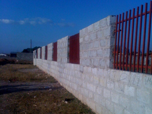

Recent Word
Project in Lusaka, Zambia
We have heard the voice of the Lord say, "It is time fore change and time for stepping." As we have watched God put his vision and plan into our hears, we have realized that it is truely time to see the hand of God move...it is time to get out of the boat and walk on the water. Now it is the time and season to see the vision realized, and time to start building. So we are happy to announce that we have started a building project in Lusaka, Zambia.
This project is no small vision, it will be done in 4 phases as God provides:
December 1st. 2010 the first blocks for the wall were put in place. A small building has been built, and the work is going well. Farm land is being looked at for raising vegetables and fruit trees that will employ widows and in turn care for the orphans. We are praying that this land will be found and purchased by the next growing season.
The security wall is almost finished, and the breaking ground for the school has been done. The school building itself will have 10 class rooms, toilets and office. The office equipment, books, uniforms, teacher's wages, and all the supplies will be needed. When the school for 100 children is finished we will begin to build the Supernatural Training Center. Teaching and training not only in Word but in the book of Acts power and authority.
We rejoice at the progress that has been made in just 1 year. God has been gracious in supplying the finances to bring us this far. Following is a word that God gave Dick for this year of 2011. We feel we are walking in this word. We pray it speaks to you and brings confirmation to your hearts to step out into the vision God has placed in you.
If God would lay it upon your heart to help with the vision, we know He would bless you greatly. If you'd like to sow into the vision, visit our giving page.
Be Blessed,
Dick and Rose Kessler
We are in a time for Gods people to awaken, to the season we are in.
A season of opportunities of the suddenlys of God.
A season of shifting and change.
A season of open doors of Gods glory.
A season of hearing Gods voice like no other times before.
We are seeing the hand of God take Lightning and Thunder Ministry into a new season. We are excited to walk in the plans He has for us and the ministry.